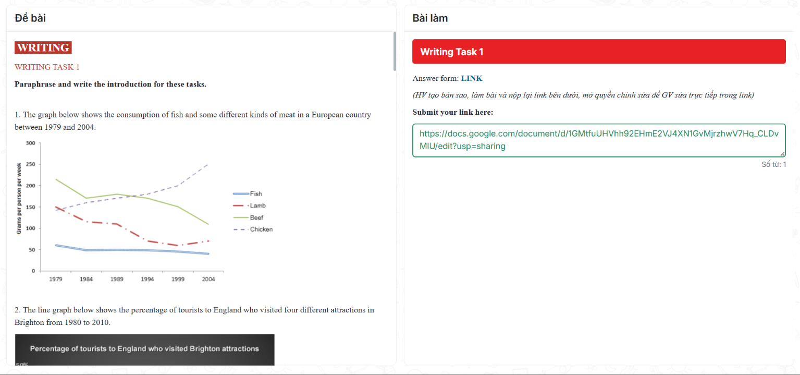

Đề bài
WRITING
WRITING TASK 1
Paraphrase and write the introduction for these tasks.
1. The graph below shows the consumption of fish and some different kinds of meat in a European country between 1979 and 2004.
2. The line graph below shows the percentage of tourists to England who visited four different attractions in Brighton from 1980 to 2010.

Ảnh bản gốc đầy đủ
Bài làm
Answer form: LINK
(HV tạo bản sao, làm bài và nộp lại link bên dưới; mở quyền chỉnh sửa để GV sửa trực tiếp trong link)
Submit your link here:
Số từ: 0